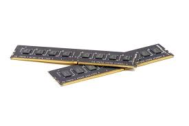

RAM-minne

RAM-minne är datorns arbetsminne och det sitter på moderkortet. i det
lagras data som processorn behöver för stunden eller inom kort. Ju större
ramminne du har desto snabbare blir datorn på att hantera många uppgifter
och program samtidigt.
Om man köper en dator har den ofta ett RAM-minne på 4GB, detta brukar räcka om man ska surfa på nätet eller liknande. Om man däremot brukar ha många program och flikar öppna samtidigt behöver man ett större RAM-minne. Om man tillexempel spelar mycket spel bör man ha ett ramminne på 16GB och uppåt.
Man vill alltså ha ett stort RAM-minne men det finns en övre gräns. Gränsen kan dels bero på hur mycket minne moderkortet kan hålla reda på men detta brukar inte vara något större problem i moderna stationära datorer. En annan viktig sak att tänka på är att RAM-minnen är också väldigt dyra i jämförelse till lagringsminnen.
Om man köper en dator har den ofta ett RAM-minne på 4GB, detta brukar räcka om man ska surfa på nätet eller liknande. Om man däremot brukar ha många program och flikar öppna samtidigt behöver man ett större RAM-minne. Om man tillexempel spelar mycket spel bör man ha ett ramminne på 16GB och uppåt.
Man vill alltså ha ett stort RAM-minne men det finns en övre gräns. Gränsen kan dels bero på hur mycket minne moderkortet kan hålla reda på men detta brukar inte vara något större problem i moderna stationära datorer. En annan viktig sak att tänka på är att RAM-minnen är också väldigt dyra i jämförelse till lagringsminnen.
Källor: Kjell och company, RAM-minnet
Enkel teknik, vad inehåller en dator
PC för alla,lagringsminnen